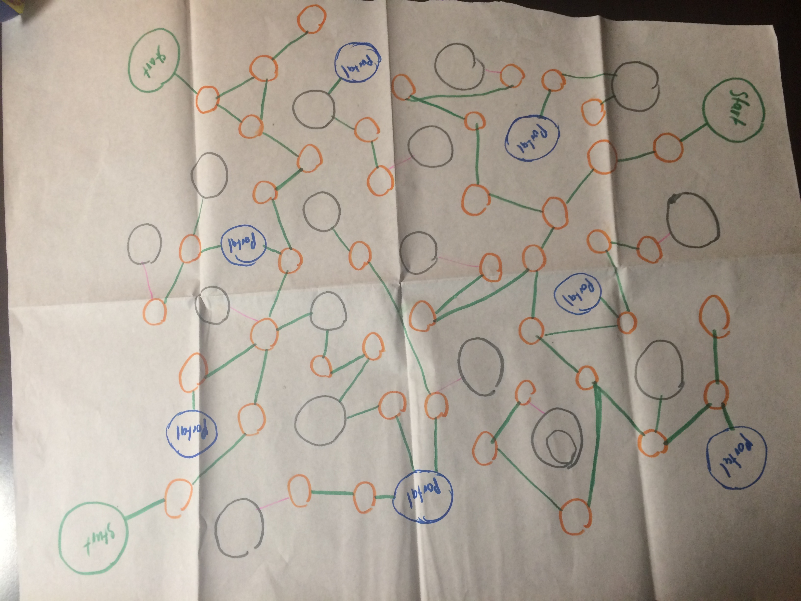
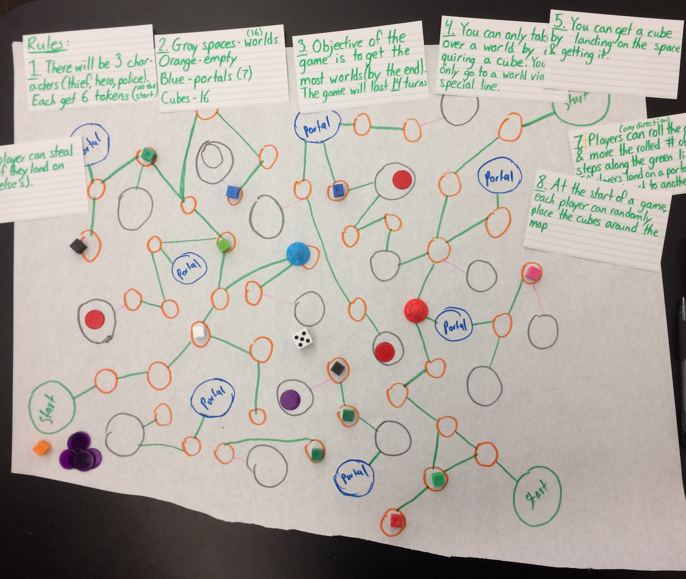
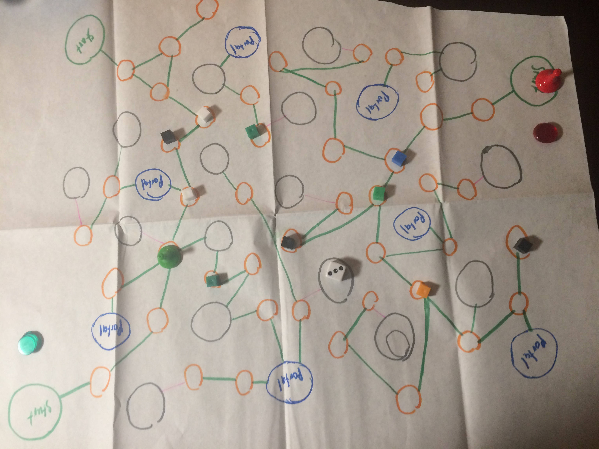
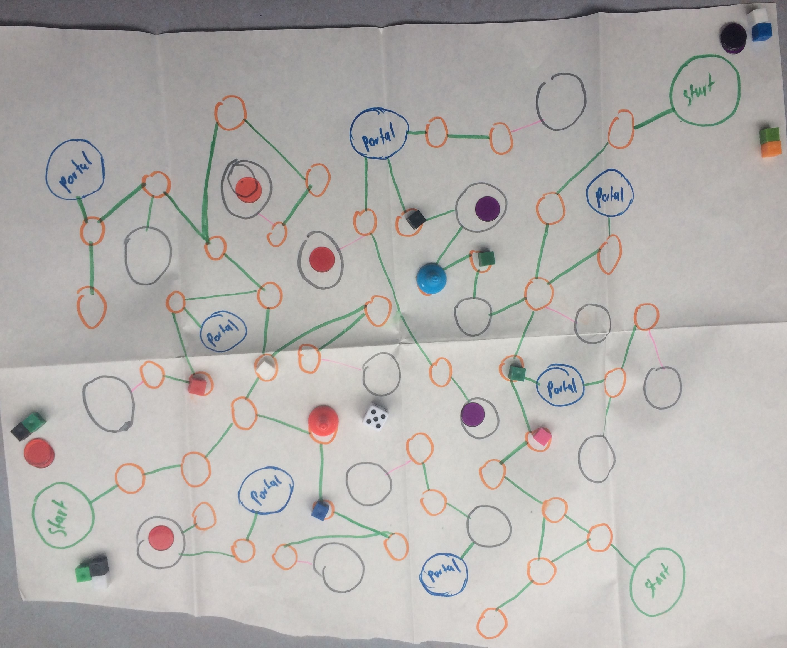

Planet Conquest

The game consists of two or three players going against each other to see who can take over, protect, or rule the most planets first, before 14 cycles pass by! There are three classes of characters: Galactic Patroller, Conqueror of Worlds, and Voyager, each with their own unique abilities; However, in order to use those abilities the player must sacrifice their dice roll and they can only use that ability a certain number of times throughout the whole duration of the game. To gain control of a planet the player must first acquire resources, or by landing exactly on another player’s planet. Players can use portals to transport all around the map and formulate strategy. At the end of the 14th cycle whoever has the most planets wins! Whoever, if a player gets 6 planets first, he/she wins the game, regardless of the cycle.
Play Log 1

After playing the game with my partner I decided to change a few things about the game. I changed the name of the “supplies” to “resources” as it made more sense to me that way. I also changed the name of the “worlds” to “planets” I removed the idea of taking someone else’s planet if they landed on it and I decreased the number of resources that would be spread across the map from 16 to 10, only if two players were playing, if a third joined then it would be 16. I did this in order to try and make the game a bit more challenging and strategic.
Play Log 2

After playing the game with my little brother Michel (12 yo), I found out that the game was indeed a bit boring and did not become as “strategic” as I hoped. One game lasted for almost an hour, but that was probably because I was explaining the rules to him (despite that he was still very engaged and really wanted to beat me at my own game! We even played another game after this one). The game ended in a draw the first time and we quit midway on the second. I felt like it lacked excitement and strategy, and that most of the time it would end up in a draw due to how long it was and how there was no way a player could lose their planet. it felt too much like a race to the finish game. Due to this I decided to implement quite some changes to bring excitement to my game.
The game will now begin with 16 resources regardless of the amount of players. Hero classes will now be implemented with abilities. There were already three different heroes, but they were just characters/colors and had nothing that made them special. Patroller will be able to “protect” a planet and other players will not be able to take it over (not even with abilities) he will be able to do this twice throughout the entirety of the game. Voyager can move anywhere on the map, twice throughout the entirety of the game, and Conqueror will be able to take over ANY two planets in exchange for one of his/her’s and can only use it once throughout the entire game. Taking over other players' planets is back, but must land EXACTLY on them to take it over. Decreased the cycles for 2 players from 14 to 10 (remains 14 for three players).
Play Log 3

Overall the game turned out pretty good and it had finally achieved somewhat what I wanted. Me and my partner were very engaged and since my partner forgot his game we had more time to play my game and surprisingly neither of us got bored. I won the first game, but it was close. After the first game I implemented a change suggested by my partner, and that was to increase the cycles (since the game was feeling a bit too short), I changed them back to 14. The game felt better afterwards now that it was a bit longer and had more strategy to it. In the last game my partner got the hang of it and was taking over my planets very fast by using the portals to his advantage, I could’ve taken them all back with Voyager’s ability, but we were interrupted by the instructor. We did not go back to that game.
My partner thought the game was a 5/5 (but I feel like he was just being generous). He suggested polishing up the rules a bit and modify the character’s abilities since they seem to be kind of the same… they feel alright to me but I’ll be thinking about it.